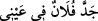
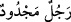

basmaktadır. Çünkü bu takdirde bütün o ifâdeler, açıkça cinlerin sözleri arasına girmiş
olur.
Fetha ve kesre okumayla alâkalı başka îzâhlar da yapılmıştır. Ama akla en yakın olanı
bizim yaptığımız tefsirdir. Buna göre âyet-i kerîmenin mânâsı; subhanekeyi okurken de
“ve teâlâ ceddük” dediğimiz gibi, “Rabbimizin azameti yücedir” demek olur. Yüceliğin
azamete isnâd edilmesi, mânâya mübâlağa katmaktadır. Bu mübâlağa mânâsı “__WORD__ ifâdesinde gâyet bâriz biçimde kendini gösterir. Filancanın benim
gözümdeki gücü ve otoritesi büyüktür, demektir. Çünkü mülk ve saltanat azametin en
son sınırıdır.
“Ceddü” kelimesi “ğınâ/zenginlik” anlamına da gelebilir. Bu takdirde kelime baht,
devlet, dünyevî nasipler anlamına gelir. Kelime ister mülk ve sultan anlamına
kullanılsın, isterse zenginlik anlamına kullanılsın, farketmez. Çünkü Arapçada “ced”,
azamet anlamına geldiği gibi babanın babası ve annenin babası “dede” anlamına ve
nasip, baht, talih anlamına da gelir. Kelimenin bu kök anlamını aynı kökten türeyen “__WORD__/şanslı adam” deyiminde görebiliyoruz. Allah’ın saltanatı, ezelî ve zâtî
zenginliği, dünya hükümdarları ve zenginlerin bahtına benzetilmiş ve buna istiâre
yoluyla ced ismi verilmiştir.
“O ne eş ne de çocuk edinmiştir.” Bu cümle Allah Teâlâ’nın şânının yüceliğini beyân
eden bir cümledir. Burada sanki şöyle bir soru sorulmaktadır: “Allah Teâlâ’nın şânı
neden çok yücedir?” Bu soruya âyette şöyle cevap veriliyor: “Çünkü O edinmemiştir.”
Yâni zâlimlerin dedikleri gibi, yüceliğinin kemalinden dolayı, ne bir eş ne de bir kız
çocuğu seçmemiştir.
Cinler Kur’anı dinleyip de tevhîde ve îmâna erince cinlerin kâfirlerinin
inançlarındaki hatâları görebildiler. Bu hatâlar Allah’ı bir eş edinme ve çocuk sâhibi
olma noktasında yaratıklarına benzetme idi. Onlar Cenâb-ı Hakk’ı tâzim edip azameti,
saltanatı ya da zenginliği dolayısı ile böylesi eksik sıfatlardan tenzih ettiler. Çünkü eş
kendisine duyulan ihtiyaçtan dolayı, çocuk, çoğalmak ve neslin devamını sağlamak için
edinilir. Bunlar ise sonradan yaratılmış olmanın alâmetlerindendir. Öte yandan Allah
açısından bunları düşünebilmek, tasavvur ve idrak sınırlarının dışındadır. Çünkü
herhangi bir kimse nasıl olur da Allah Teâlâ’dan bir parça olur ve bir cins altında
birleşebilir ve nasıl olur da Allah altındaki bir sınıftan kendine eş edinir ve kendi
nev’ine denk olan bir nev’den çocuk edinir. Hristiyanlar Mesih İsa Allah’ın oğludur,
yahudiler; Uzeyr Allah’ın oğludur, bâzı Arap müşrikleri; melekler Allah’ın kızlarıdır,
demişlerdi. Mesih İsa’nın Allah’ın oğlu olduğu iddiâ edilecek olursa bu sakat iddiânın
sonucuna göre Meryem’in de Allah’ın karısı olması gerekir. Bu sebeple Allah’ın eşi
anlamına âyette “sâhibe” kelimesi kullanılmıştır. Yâni bir başka ifâdeyle çocuk, babanın
eşi olan bir annenin olmasını gerektirir.
Burada “sâhibe/eş” kelimesi ile nefse, “veled/çocuk” kelimesi ile kalbe işâret
ediliyor. Böylece ruh, nefis ve çocuk açısından bir eş ve baba gibi oluyor. Aslında o her
türlü alâka ve ilişkiden mücerreddir. Rûhun bedene bağlanması, Cenâb-ı Hakk’ın